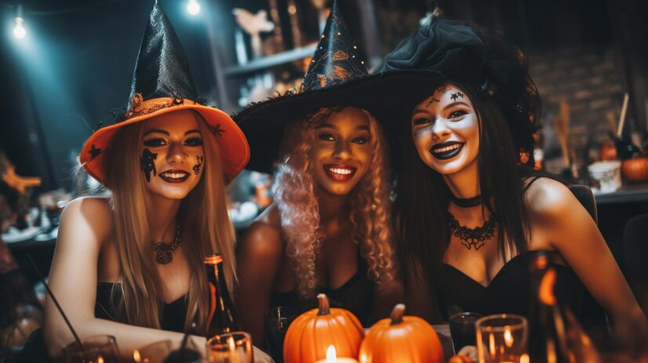
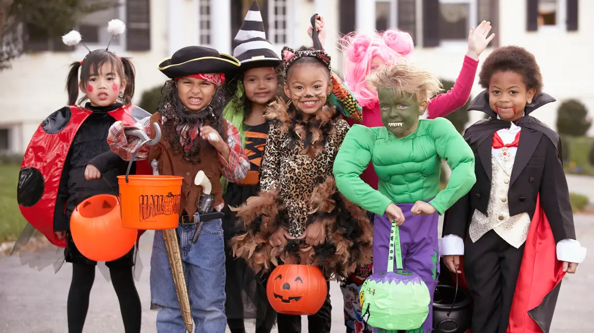

Discover the origins, traditions, and enchanting costumes of this mystical night.
ExploreHalloween, celebrated on October 31st, originated from the ancient Celtic festival of Samhain, which marked the end of the harvest season and the beginning of winter. The Celts believed the boundary between the living and the dead blurred on this night, allowing spirits to roam. To protect themselves, people lit bonfires and wore animal skin costumes. As Christianity spread, the festival evolved into All Hallows' Eve, which later became Halloween. By the 19th century, Irish immigrants brought Halloween customs to America, introducing practices like trick-or-treating. Today, Halloween is a festive celebration blending ancient traditions with modern festivities, from haunted houses to costume parties, preserving its rich history.

Halloween has evolved from its ancient origins into a widely celebrated holiday full of fun and excitement. It blends cultural, social, and commercial elements, honoring its roots while embracing new customs like decorating homes, carving pumpkins, and hosting themed parties. Dressing up in costumes, whether whimsical or scary, allows for creative self-expression. For children, trick-or-treating is a key tradition that fosters community interaction. Halloween also offers thrills through haunted houses, horror movies, and ghost stories, creating an exciting atmosphere. With its commercial success, Halloween has become a major event in the economy, while continuing to bring people together in celebration.
The tradition of wearing costumes on Halloween dates back to the ancient Celtic festival of Samhain, where people wore animal skin costumes to protect themselves from roaming spirits. As Halloween evolved, especially with the influence of Christianity, costumes became a form of playful expression. In the 19th century, Irish immigrants popularized the custom in America, turning it into a community-centered celebration. Over time, costumes shifted from being a form of protection to a fun and creative way to celebrate the holiday. Today, Halloween costumes range from spooky to whimsical, reflecting trends, pop culture, and creativity. The tradition allows everyone to explore different identities, whether through traditional, modern, or funny costumes. It fosters joy and community, with people of all ages coming together to celebrate and embrace the spirit of the holiday.
